RHRS：面向可编程 LLM 推理系统的细粒度批调度
摘要。现代 LLM 应用正从单轮文本生成转向 workflow-centric 场景，包含多步 reasoning、tool use 和 agent collaboration。已有 serving systems 主要面向传统文本生成，把每次 invocation 看成围绕 prefill-decode 执行的 monolithic request。这个粗粒度抽象无法捕捉跨步骤依赖和运行时状态变化，导致及时资源复用、并行执行机会被错过，排队延迟增加，Average Completion Time（ACT）升高，GPU utilization 下降。
近期 programmable inference systems 将 LLM execution 暴露为带显式依赖和状态的 fine-grained components，从而支持 context reuse、减少重复 computation，并创造跨步骤 batching 与更早释放资源的机会。然而，已有工作主要关注 programmability 与 execution，而面向 ACT 的 component scheduling 仍研究不足。queue-order 或 local batch-filling policies 仍可能做出局部高效但全局次优的选择，增加平均完成时间并削弱 tail-latency stability。
本文研究 programmable LLM inference systems 中的 fine-grained batch scheduling。我们把每个用户任务建模为由异构 component requests 组成的动态过程，在 dependency、batching 和 memory constraints 下最小化 ACT。本文提出 RHRS，一个 online heuristic scheduler，结合 candidate batch construction、lightweight pruning 和 limited-horizon rollout。通过同时考虑 batching efficiency、request urgency 和 downstream unlocking effects，RHRS 在即时执行收益与未来任务进展之间取得平衡。实验显示，RHRS 在代表性 workload 上降低 ACT 26%–45%，P95 tail latency 最高降低 14.8%，throughput 比 state-of-the-art baselines 最高提升 22.9%。
1 引言
大语言模型（LLMs）已广泛部署于问答、代码生成、retrieval-augmented generation 和 intelligent agents 等应用，并迅速成为现代 AI clusters 中的主导 workload。随着这些应用从单轮文本生成演进到包含多步 reasoning、tool utilization 和 agent collaboration 的复杂场景，单个 request 的执行往往表现为一个复杂 workflow，跨越严格依赖关系、动态执行路径和中间状态传播。因此，高效服务 workflow-centric LLM applications 已成为现代 serving systems 的关键任务。
已有 LLM serving systems 主要为传统文本生成 workload 设计。它们通常把每次 LLM invocation 当作 monolithic request，并围绕 prefill 和 decode 阶段组织执行。continuous batching、KV cache management、prefill-decode disaggregation 等技术在此类设定下能有效提升 throughput。然而，在越来越常见的 workflow-based LLM applications 中，这种粗粒度抽象不够用。当 request 包含多次 model invocations、external tool executions 和 intermediate state passing 时，按整个 request 或固定 generation phase 调度，无法捕捉跨步骤依赖或 runtime state variations。因此，timely resource reuse 和 parallel execution 机会被错过，导致 queueing delays、ACT 增加和 GPU utilization 下降。
为更好支持复杂 workflow，近期研究提出 programmable LLM inference systems，也称 programmable serving systems。它们把 LLM execution 建模为结构化的 programmatic process，将执行拆分为 embedding、forward、sampling 等细粒度 components，并暴露显式 dependencies 和 states。这类系统能更有效地 reuse context、减少重复 computation（例如重复 prefill），并创造 cross-step batching 与 earlier resource release 的新机会。可是已有工作主要关注 programmability 和 execution，fine-grained component 的 scheduling 仍未被充分研究。简单 queue-order 或 local batch-filling policies 可能错过 dependency-aware batching opportunities，在 dynamic workloads 下得到 suboptimal ACT。
在这种范式下，programmable inference systems 中对 components 做 fine-grained batch scheduling 面临三个核心挑战。第一，heterogeneous component costs：不同 components 有不同 execution time、resource demand 和 batching characteristics，因此简单 ready-order 或 batch-filling policy 可能做出 ACT-suboptimal 的局部决策。第二，dependency-batching interaction：调度决策不仅影响当前 ready components，也决定何时解锁 dependent components，batching 与未来执行之间存在复杂耦合。第三，partial visibility：执行路径可能因 tool interactions 或 intermediate results 动态展开，调度器必须在不完整信息下在线决策。
为解决这些问题，本文把 LLM application task 建模为由 heterogeneous component requests 组成的动态过程，目标是在 dependency、batching 和 resource constraints 下最小化 ACT。具体而言，在每个 scheduling point，RHRS 通过联合评估 batching benefits、waiting costs 和 downstream unlocking potential 来构造 candidate batches，从而在 immediate batching efficiency 与 overall task progress 之间取得有效折中。
本文贡献如下：
- 形式化 programmable inference systems 中的 fine-grained batch scheduling problem，捕捉 component dependencies、batching constraints 和 hardware resource limits。
- 提出 RHRS，一个 ACT-oriented online scheduling algorithm，在 batch formation 时联合考虑 batching benefits、waiting costs 和 downstream unlocking effects。
- 在代表性复杂 workload 下开展评估，显示 RHRS 相比已有方法降低 ACT 26%–45%，降低 P95 tail latency 最高 14.8%，并提升 throughput 最高 22.9%。
2 背景与动机
本节介绍 programmable inference systems 中的 component-level execution，说明已有 scheduling strategies 为什么不足，并通过示例说明 ACT-oriented fine-grained batch scheduling 的必要性。
2.1 可编程推理中的 component-level execution
传统 LLM serving systems 通常把每个用户 request 当作围绕 prefill 和 decode phases 的 monolithic generation task。input processing、model forwarding、sampling 和 state management 等内部操作由 serving engine 隐式处理，而不是作为独立 scheduling entities 暴露出来。
现代 LLM applications 越来越包含 retrieval augmentation、tool use 和 multi-step reasoning。为支持这些场景，programmable inference systems 将 LLM execution 暴露为由多个 dependent execution units 组成的动态过程。本文称这些 execution units 为 components，例如 embedding、forward computation 和 sampling；它们的运行时实例称为 component requests。component request 只有在 execution graph 中所有 predecessor component requests 都完成后才变得 schedulable。
这个抽象从两个方面改变 scheduling problem。第一，调度器操作的是 ready component requests，而它们通常只有在 component type 相同的时候才能 batch。它们的 execution costs 和 batching benefits 还会随 token length 与 batch composition 变化。第二，execution path 是动态展开的，因为 tool outputs 等 intermediate results 可能决定后续路径。因此调度器必须在 partial visibility 下在线决策。
2.2 已有调度策略的局限
已有 LLM serving systems 主要在 monolithic request abstraction 下优化 scheduling。Orca 和 vLLM 通过 iteration-level scheduling、continuous batching 和 KV-cache management 提升 serving efficiency；Sarathi-Serve、DistServe、Splitwise 则利用 prefill-decode differences，通过 chunked prefill、phase separation 或 resource decoupling 获得收益。这些方法对标准 text generation 有效，但它们的 scheduling entity 仍是完整 request、token iterations 或 coarse phases，而不是动态出现的 heterogeneous component requests。
近期 programmable inference systems 暴露更丰富的 execution structures。Parrot 与 SGLang 使 application-level structures 对 serving system 可见，PIE 进一步将 generation 分解为不同 components 对应的 handlers。然而，这些系统主要关注 programmability，而不是为 ACT 优化 component execution order 与 batching decisions。例如，PIE 把 component requests 放入 handler-specific queues，并通过选择同类型 ready component requests 来形成 batches。这种 queue-driven batching 没有显式考虑 execution costs、token-length heterogeneity 或解锁未来 successors 的价值。
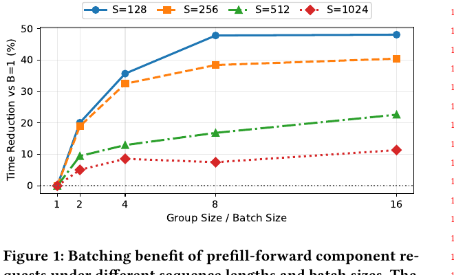
图 1 展示了 16 个 prefill-forward component requests 在不同 group size 下相对于不 batching 的 execution time reduction。收益既不与 batch size 成比例，也不在不同 sequence length 间一致。短 prefill requests 因固定开销摊薄而更受益于 batching；较长 requests 更受 token-scale computation 和 attention costs 支配。因此，greedily maximizing batch fill rate 可能对 ACT 不利：一个局部满 batch 可能延迟短 requests，而先执行一个低成本 predecessor 可能解锁更 homogeneous、更有利的 batch。
2.3 动机示例
论文构造了一个 maximum batch size 为 3 的示例，说明 greedy batch maximization 并不 ACT-optimal。在 scheduling time \(t_0\)，请求 \(Q_1,Q_2,Q_3\) 有 ready forward component requests \(F_1,F_2,F_3\)。其中 \(F_1\) 处理 1024 tokens，而 \(F_2,F_3\) 各处理 128 tokens。同时，\(Q_4\) 有一个 lightweight embedding component request \(E_4\)，它执行后会解锁一个 128-token forward request \(F_4\)。
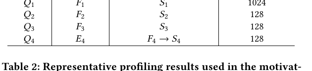
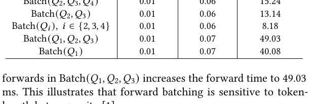
表 2 给出代表性 execution times。三个 128-token forward 组成 homogeneous batch \(Batch(Q_2,Q_3,Q_4)\) 只需 15.24 ms；而把 1024-token forward 与两个 128-token forwards 混合到 \(Batch(Q_1,Q_2,Q_3)\) 会使 forward time 增至 49.03 ms。这说明 forward batching 对 token-length heterogeneity 很敏感。
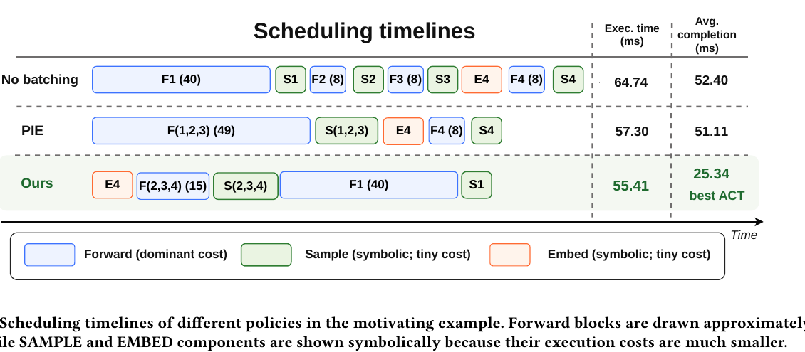
图 2 比较了不同 schedule。No batching 顺序处理 component requests，ACT 为 52.40 ms。PIE 与 MFG greedy 地把当前 ready 的三个 forward requests \(F_1,F_2,F_3\) 合为 batch，ACT 为 51.11 ms，因为短请求 \(Q_2,Q_3\) 必须等待长 forward computation，而且 \(E_4\) 的 unlocking value 被忽略。
相比之下，本文方法先执行轻量 \(E_4\) 来解锁 \(F_4\)，再把三个短 forward requests \(F_2,F_3,F_4\) 合 batch，最后单独执行长 forward \(F_1\)。该 schedule 通过创造更 homogeneous 的 batching opportunity，并避免短请求不必要等待，把 ACT 降至 25.34 ms。这个例子说明，component-level scheduling 不应只最大化 immediate batch size，而应联合考虑 execution heterogeneity、dependency unlocking 和 short-horizon future benefits。
3 问题形式化
本节形式化 programmable LLM inference systems 中的 fine-grained batch scheduling problem，给出 system model、decision variables、constraints，并分析计算复杂性。
3.1 系统模型
论文考虑一个 programmable LLM inference system，其中每个 inference task 被拆成多个可以独立调度的 fine-grained component requests。每个 component request 是底层 component 的运行时实例，例如 ALLOC_KV、EMBED、FORWARD、SAMPLE 和 DEALLOC_KV。
令 \(J=\{1,2,\ldots,N\}\) 为 inference tasks 集合，\(V=\{1,2,\ldots,C\}\) 为所有 component requests 集合。每个 task \(j\in J\) 包含一组 component requests。二元 ownership indicator \(W_{jv}\) 表示 component request v 是否属于 task j。\(a_j\) 表示 task j 的 arrival time。
execution dependencies 由 predecessor relation set \(R\subseteq V\times V\) 捕捉。如果 \((u,v)\in R\)，component request v 只有在 u 完成后才能调度。令 \(F\) 为 component types 集合，\(X_v\in F\) 表示 component request v 的 type。不同 component type 有不同 execution semantics 和 resource behaviors。例如 EMBED、FORWARD、SAMPLE 主要消耗 GPU computation，而 ALLOC_KV 和 DEALLOC_KV 改变 memory occupancy。
运行时，scheduler 将 ready component requests 分组成 sequentially executed batches。batch 中的 component requests 必须 type 相同。batch formation 还受 maximum batch size \(B_{max}\) 和 available memory budget M 约束。论文用 \(\Delta_v\) 表示执行 component request v 造成的 net memory change，正值增加 memory occupancy，负值释放 memory。
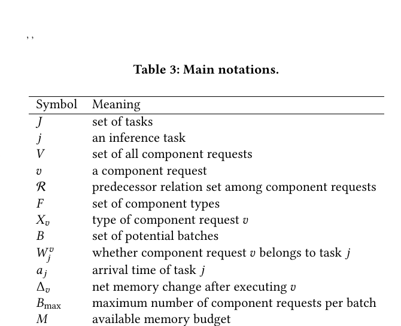
3.2 问题定义
二元决策变量 \(z_{bv}\) 表示 component request v 是否分配给 batch b；辅助二元变量 \(y_{bf}\) 表示 batch b 是否执行 component type f。batch execution time \(T_b\) 取决于 component type 以及其 assigned component requests 的规模，例如 token lengths。因为 batches sequentially executed，batch completion time 为 \(C_b=C_{b-1}+T_b\)，\(C_0=0\)。memory occupancy 随 batch 执行更新。task completion time \(t_j\) 由属于该 task 的所有 component requests 中最后完成的 batch 决定。
为保证 schedule 物理和逻辑可行，模型包括以下约束：每个 component request 必须恰好调度一次；若 u 是 v 的 predecessor，则包含 u 的 batch 必须严格早于包含 v 的 batch；同一个 batch 内所有 component requests 必须匹配 batch 指定的 component type，并且一个 batch 最多执行一种 type；batch size 不超过最大容量；memory occupancy 在任意 batch 后不能超过 budget；task completion time 不得早于该 task 任一 component request 所在 batch 的 completion time。
目标是最小化所有 tasks 的 Average Completion Time（ACT）：平均 \(t_j-a_j\)。完整 formulation 将 component precedence、type consistency、batch-size limits、memory capacity 和 ACT objective 耦合在一起。
定理 3.1。该 fine-grained batch scheduling problem 是 NP-hard。证明考虑一个受限特例：放松 type consistency、batch-size 和 memory constraints，每个 batch 只含一个 component request，所有 tasks 同时到达。此时每个 component request 成为 atomic job，batch sequence 成为单机 processing order，R 成为 precedence constraint set；最小化 ACT 等价于最小化 total completion time。这归约到经典 \(1|prec|\sum C_j\) 问题，后者是 NP-hard。因此一般问题 NP-hard。该不可解性促使论文提出低开销 online heuristic RHRS。
4 算法设计
本节提出 RHRS（Rollout-based Heuristic Runtime Scheduling），一种面向 programmable inference systems 中 fine-grained component batching 的 online scheduling algorithm。RHRS 结合 empirical cost estimation、heuristic candidate construction、lightweight pruning 和 limited-horizon rollout 来做 ACT-oriented batching decisions。
4.1 设计目标与总体方法
RHRS 在 single-GPU setting 下操作。每个 scheduling instant，它从当前 ready GPU-bound component requests 中选择一个 executable batch。目标是最小化 ACT，同时平衡 immediate batching efficiency、waiting fairness 和 future task progress。
在 programmable inference 中，一个 batch decision 不仅影响当前 execution cost，还会影响后续 execution paths、KV-cache occupancy 和 future component requests 的暴露。纯 myopic batching 可能延迟能解锁 useful successors 的 components，而 exhaustive lookahead 对 online serving 又过于昂贵。因此 RHRS 采用 Approximate Dynamic Programming（ADP）风格：先构造代表性 candidate batches，用低成本 heuristic 做 pruning，再对剩余 candidates 在 shadow state 上进行 limited-horizon rollout。
4.2 状态表示与可行动作
在 decision epoch t，scheduler 观察 system state \(s_t\)，包括 current time、task progress、ready GPU-bound component requests、KV-cache occupancy 和 partially visible future topology。令 \(R(s_t)\) 为 ready GPU-bound component requests 集合。RHRS 将它们划分为 component families，例如 ALLOC_KV、EMBED_TXT、SAMPLE 和 DEALLOC_KV。由于 prefill 和 decode 有不同 latency-scaling behaviors，FORWARD 进一步分为 PREFILL 和 DECODE families。每次 epoch，RHRS 从单个 family 中 dispatch 一个 batch。
candidate batch \(B\subseteq R_f(s_t)\) 只有满足 batch-size constraint、token-budget limit、memory-capacity constraint（若适用）和 topological precedence constraints 时才 feasible。因此，batch 不能在所有 predecessors 完成前执行某个 component request。
4.3 执行时间建模
component-level batching latency 取决于 component type、sequence/context length 和 batch heterogeneity。RHRS 使用轻量 empirical execution-time model 驱动 simulator events 并估计 rollout 中的 candidate costs。该模型旨在捕捉 dominant scaling trends，支持公平比较，而不是精确预测 kernel-level latency。
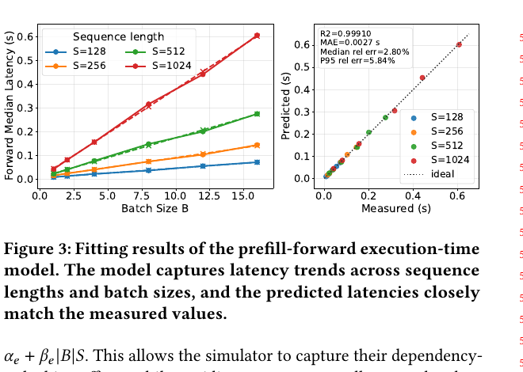
论文使用 TinyLlama-1.1B 在 NVIDIA RTX 3090 上 profile 各 component type，warm-up 后取 30 次运行的 median latency。EMBED 和 SAMPLE 等轻量 components 比 FORWARD 快得多，使用简单线性函数建模。FORWARD 则分别建模 prefill 和 decode。prefill-forward latency 包含 token processing、attention computation 和 paged KV-cache access overheads；decode-forward latency 也包含 batch size、context length 和 KV page access 相关项。图 3 显示 prefill-forward model 的 \(R^2=0.9991\)，Mean Absolute Error 为 2.71 ms，足够用于 candidate ranking 与 rollout-based scheduling。
4.4 Candidate construction 与 lightweight pruning
枚举所有 feasible batches 是组合爆炸的。RHRS 因此为每个 component family 通过 greedy expansion 构造少量代表性 candidates。构造 batch B 时，每一步选择使某个 heuristic score 最大的 valid component request x。
为衡量 immediate batching benefit，RHRS 定义 normalized batching gain：
其中 \(T_{solo}(B)\) 是单独执行 B 中 component requests 的总 latency，\(T_{batch}(B)\) 是估计 batched latency。RHRS 还估计执行 component request x 对 progress 的贡献：
其中 unlock(x) 是新暴露 ready GPU-bound successors 的归一化数量，finish(x) 表示 x 是否完成其 task，kv(x) 捕捉执行 x 后缓解的 KV-cache pressure。
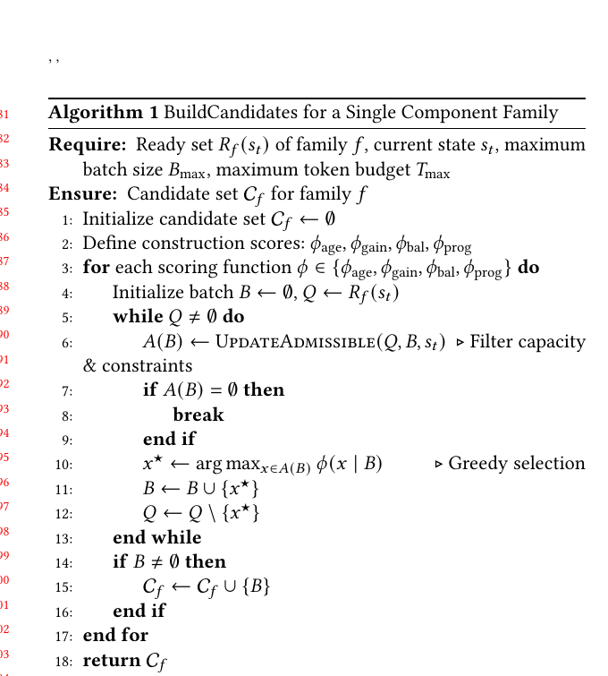
RHRS 用四种 expansion preferences 生成多样 candidates：age-oriented 偏好等待更久的 task；gain-oriented 偏好增加 batching gain，同时加入少量 waiting signal；balanced 综合 waiting 和 batch awareness；progress-oriented 偏好能解锁后继、完成 task 或释放 KV pressure 的 requests。这些偏好只用于 candidate diversity，最终选择仍由 rollout evaluation 决定。
构造后，RHRS 去重并用 pruning score 排序：
它保留 top-M candidates，从而在保留代表性选择的同时控制 rollout width。
4.5 Limited-horizon rollout evaluation
对 top-M candidates，RHRS 在 cloned shadow state 上执行 limited-horizon rollout。假设从 candidate batch B 开始的 rollout trajectory 为 \(A_0,A_1,\ldots,A_{H_B-1}\)，其中 \(A_0=B\)，\(H_B\le H\)。每一步的模拟 latency 为 \(\Delta t_h=T_{batch}(A_h)\)，执行前 shadow state 中 unfinished tasks 集合为 \(R_{act}(\hat{s}_h)\)。rollout cost 为：
这个成本近似 lookahead horizon 内的 cumulative flow time。因为每个 unfinished task 都会在该模拟 step 等待 \(\Delta t_h\)，最小化这个量与 ACT objective 对齐。rollout 会更新 task progress、KV states 和 newly unlocked component requests。为避免指数分支，RHRS 在第一个 candidate batch 之后使用 deterministic continuation policy：后续 shadow batch 按 \(S_{prune}\) 贪心选择。horizon H 保持小常数，用来捕捉短期 unlocking 和 KV-release effects。
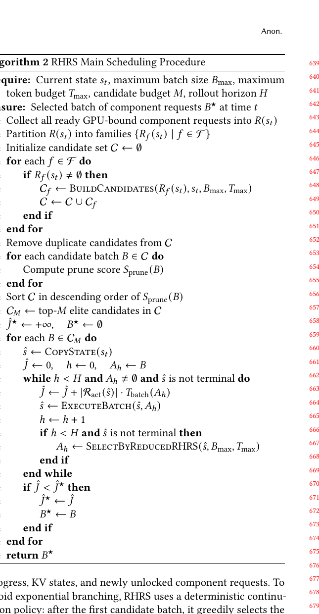
4.6 RHRS 流程与复杂度
每个 epoch，RHRS 按 family 划分 ready component requests，使用算法 1 构建 candidates，将其 pruning 到 top-M，然后选择 rollout-estimated cost 最小的 batch。由于 M 和 H 固定且不随 system load 变化，每次决策复杂度随 ready set size 线性增长，online complexity 为 \(O(R)\)。
5 评估
5.1 实验设置
论文用 discrete-event simulation framework 评估 scheduling strategies。simulator 建模 request arrivals、batch completions、component readiness、topological dependencies、batching constraints 和 memory-capacity constraints，并记录每个 user task 的 completion time。为公平比较，所有方法使用相同 workloads、execution-time models 和 hardware constraints。
实验在 Ubuntu 20.04 server 上进行，硬件包括 Intel Xeon Gold 6152 CPU、125 GiB memory 和 NVIDIA GeForce RTX 3090 GPU。因为本文关注 component-level scheduling 而非 low-level kernel optimization，调度逻辑在 simulator 中运行，batch latencies 使用第 4.3 节的 empirical execution-time model 估计。
workloads 方面，论文合成四类代表性 workload：Short（简短对话 queries）、Text（标准长文本生成）、Agent（涉及 tool calls 和 resumed execution 的 multi-stage workflows）、Mixed（前三者 1:1:1 混合）。默认使用 Mixed。Task arrivals 服从 Poisson process；默认 request population 为 100，默认 maximum batch size 为 16。实验改变 arrival rate、request population 和 batch-size limit，考察不同 load intensity 与 system constraints。
baselines 包括：PIE-style queue-driven policy，它按 component type 扫描 ready queues 并按 arrival order greedy batching；MFG（MaxFill-Greedy），选择能形成最大 feasible batch 的 component family 并尽量填满；Sarathi-Serve adapted baseline，按 prefill-forward 和 decode-forward 分离形成 homogeneous batches，但不建模 dependency unlocking；RHRS 则构造 candidates、用 batching gain 与 topological progress pruning，并通过 limited-horizon rollout 选择 estimated ACT 最低的 batch。
指标包括 Average Completion Time（ACT）、P95 tail latency 和 request throughput。
5.2 不同到达率下的总体性能
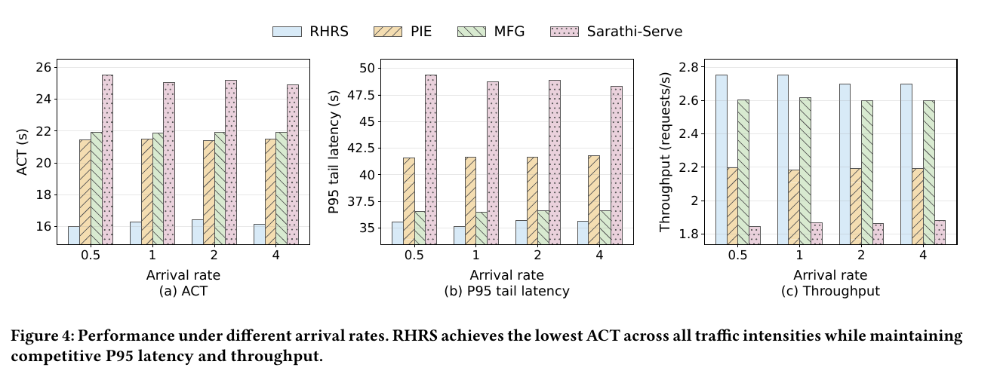
论文首先评估不同 arrival rates \(\lambda \in \{0.5,1.0,2.0,4.0\}\)。图 4 显示，所有 arrival intensities 下 RHRS 都取得最低 ACT。在 heavy load \(\lambda=4.0\) 时，RHRS 的 ACT 为 16.14 s，优于 PIE 的 21.47 s、MFG 的 21.91 s 和 Sarathi-Serve 的 24.92 s，分别改善 24.8%、26.3% 和 35.2%。这说明 rollout-based scheduling 可以通过同时考虑当前 batching quality 和 downstream task progress 来降低 congestion。
RHRS 在 tail latency 和 throughput 上也表现良好。在 \(\lambda=4.0\) 时，P95 latency 为 35.61 s，比 PIE 低 14.8%，比 Sarathi-Serve 低 26.3%。同时 RHRS throughput 达到 2.70 requests/s，分别比 PIE、MFG、Sarathi-Serve 高 22.9%、3.7% 和 43.3%。MFG 在高负载下可能因 aggressive batch filling 获得有竞争力的 P95 latency，但由于不显式考虑 critical-path progress 或 future component unlocking，它的 ACT 仍然较差。
5.3 不同 workload 类型
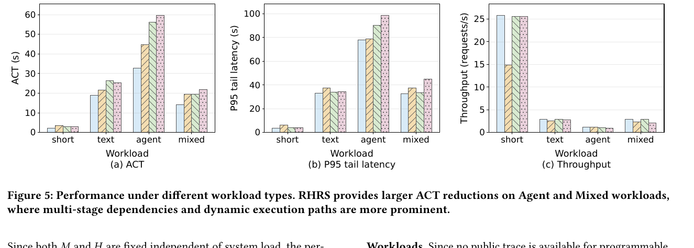
图 5 比较 Short、Text、Agent、Mixed 四类 workload。RHRS 在所有场景中 ACT 最低，并且在 Agent 与 Mixed workloads 上收益更明显。在 Agent workload 下，RHRS 的 ACT 为 32.87 s，较 PIE、MFG 和 Sarathi-Serve 分别降低 26.5%、41.6% 和 44.9%。在 Mixed workload 下，RHRS 也分别降低 ACT 27.3%、26.9% 和 35.4%。
RHRS 在 Agent 与 Mixed workloads 上优势更大，是因为这些 workload 包含 multi-stage execution、tool-return suspensions 和 frequent dependency transitions。局部大的 batch 可能延迟能解锁重要 successors 的 components。RHRS 通过评估 short-horizon downstream effects，可以牺牲少量 immediate batching gain 换取更快的整体 task progress。P95 latency 方面，RHRS 在 Mixed workload 上达到 32.65 s，比 PIE 和 Sarathi-Serve 分别低 12.7% 和 27.0%。
5.4 扩展性：不同 request population
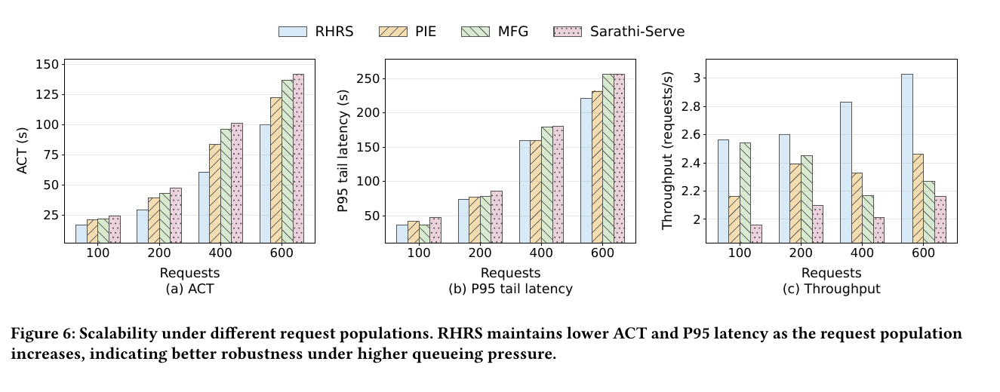
论文将 request population 改为 \(\{100,200,400,600\}\)。所有方法的 ACT 和 P95 latency 都随请求数量增加而上升，因为更大的 population 会产生更长 queueing chains。但 RHRS 始终限制这种退化。在 400 requests 时，RHRS 的 ACT 为 60.52 s，相比 PIE、MFG 和 Sarathi-Serve 分别改善 27.9%、37.2% 和 40.1%。即使在 600 requests，RHRS 仍保持 18.2%–29.6% 的 ACT 优势。
RHRS throughput scaling 也更好。在 600 requests 时，它达到 3.03 requests/s，比 baselines 高 23.1% 到 40.2%，同时取得最低 P95 latency 221.45 s。这说明 hierarchical candidate pruning 和 rollout evaluation 在 ready set 变大时仍能识别 high-value batches，避免纯 greedy decisions 导致的 congestion。
5.5 Maximum batch size 的影响
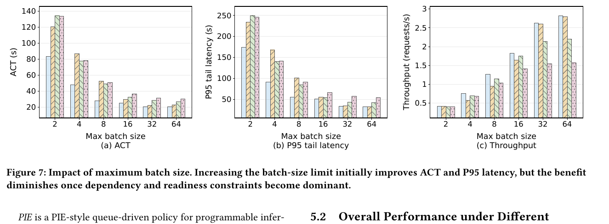
论文进一步改变 maximum batch size \(B_{max}\in\{2,4,8,16,32,64\}\)。增大 \(B_{max}\) 通常会降低 ACT 和 P95 latency，因为更多同类型 component requests 可以 co-scheduled。对 RHRS 来说，\(B_{max}\) 从 2 增加到 32 时，ACT 从 83.27 s 降到 20.46 s。
但当 batch-size limit 足够大后收益迅速递减。从 32 增加到 64 几乎不再改善 ACT，甚至从 20.46 s 变为 20.76 s。这说明此时 batching capacity 不再是主要瓶颈；topological dependencies 和 homogeneous ready component requests 的可用性才主导 scheduling efficiency。在所有 batch-size settings 下，RHRS 都保持最低 ACT。
5.6 消融与参数敏感性
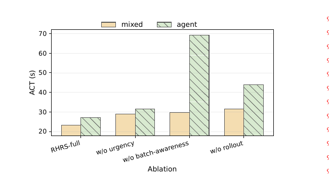
图 8 显示每个模块都对 RHRS 有贡献。在 Mixed workload 下，去掉 urgency-awareness、batch-awareness 和 rollout 分别使 ACT 增加 23.7%、27.3% 和 34.9%。去掉 rollout 后的明显退化说明，静态 heuristic scoring 对复杂 component DAGs 仍然不足。在 Agent workload 下，去掉 batch-awareness 会让 ACT 从 27.22 s 增至 69.28 s，说明复杂 multi-stage tasks 同时需要 structural progress 和 batching profitability。
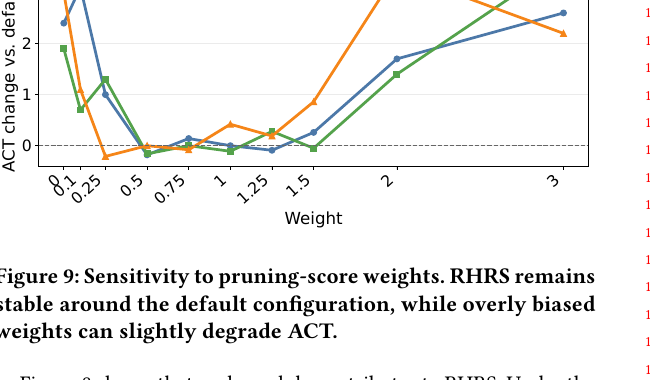
图 9 分析 pruning-score weights。默认配置附近，gain、age、unlocking weights 的小幅变化只造成较小 ACT 波动，说明 RHRS 不过度依赖精确权重。但过度强调 age 或 unlocking 仍会恶化性能，例如使 ACT 增加约 3.4%–3.6%。这说明 batching efficiency、request urgency 和 dependency unlocking 应平衡，而不是单独优化。
论文还分析 candidate budget M 和 rollout horizon H。在 \(H=3\) 时，M 从 2 增加到 8 将 ACT 从 17.87 s 降至 17.68 s，再增加到 16 或 32 几乎没有改善。rollout horizon 从 1 增加到 3 时，ACT 从 21.92 s 降至 17.68 s；更大的 horizon 由于 future visibility 有限和 estimation error 累积，不再稳定带来额外收益。因此默认设置 \(M=16\)、\(H=3\)。
6 结论
本文研究 programmable LLM inference systems 中的 fine-grained batch scheduling。它把 user tasks 建模为 heterogeneous component requests 的 dynamic execution processes，并在 dependency、batching 和 resource constraints 下优化 Average Completion Time（ACT）。
论文提出 RHRS，一个 online scheduler，结合 candidate batch construction、lightweight pruning 和 limited-horizon shadow rollout。通过联合考虑 batching efficiency、task urgency 和 downstream unlocking effects，RHRS 缓解了 queue-order 与 locally greedy batch-filling policies 的次优性。实验显示，RHRS 在 diverse settings 下持续降低 ACT，在代表性 workloads 上达到 26%–45% 的 ACT reduction，同时 P95 tail latency 最高降低 14.8%，throughput 比 state-of-the-art baselines 最高提升 22.9%。未来工作包括把 RHRS 扩展到 distributed multi-GPU settings，加入 cross-device dependency 和 communication-aware scheduling，并探索 learning-based methods 以更好捕捉未来执行动态。
参考文献
参考文献属于学术元数据，作者姓名、论文题名、会议名和系统名按原文保留；完整参考文献页图如下。
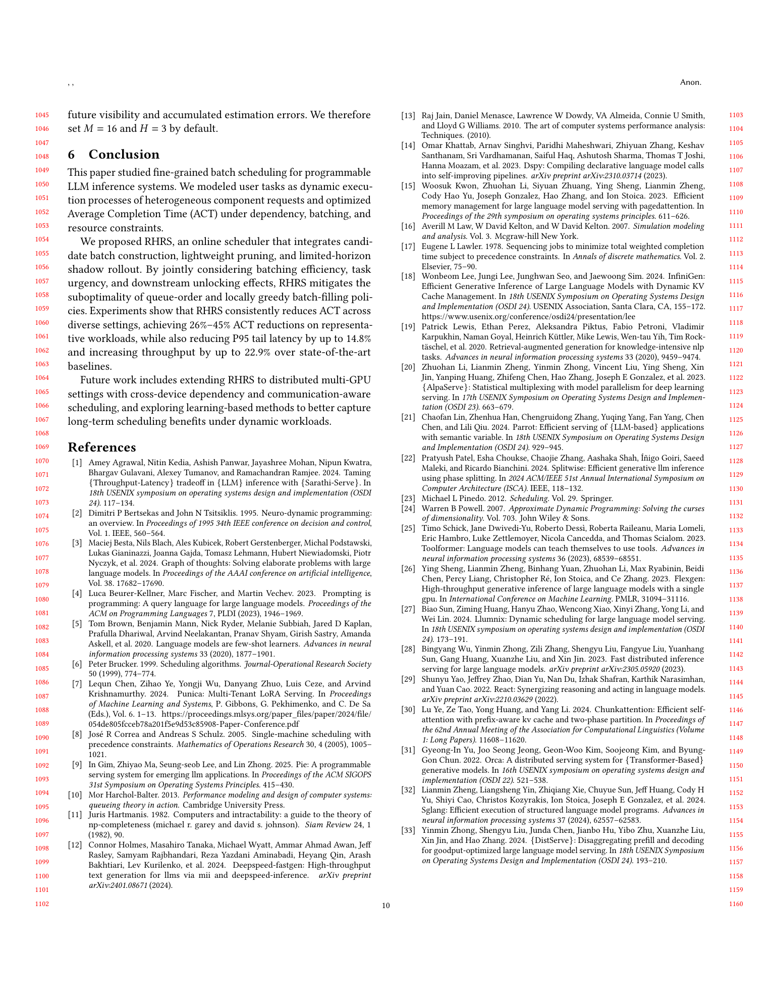